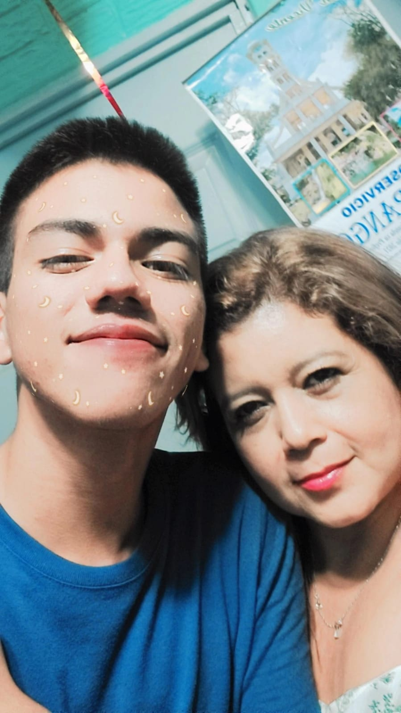
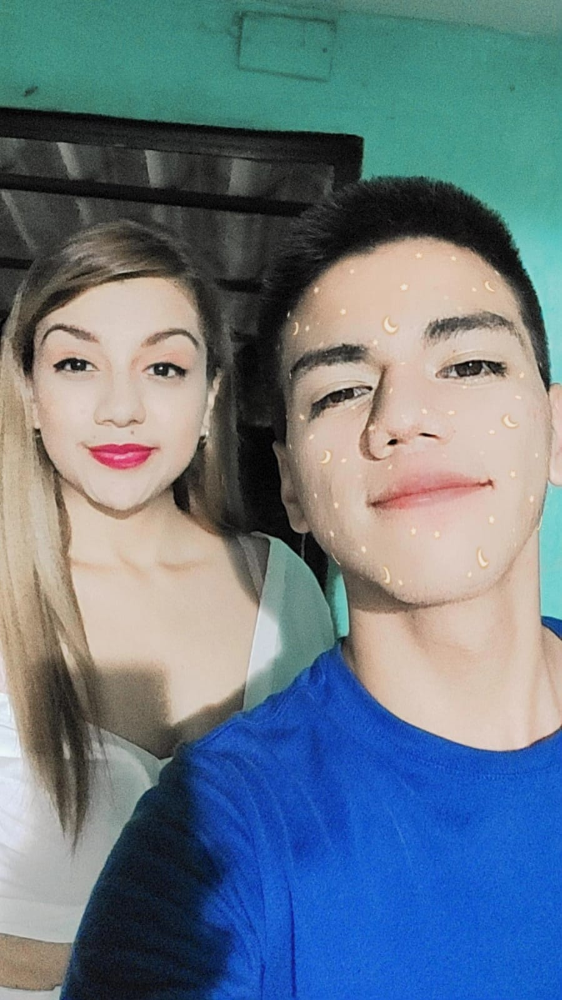
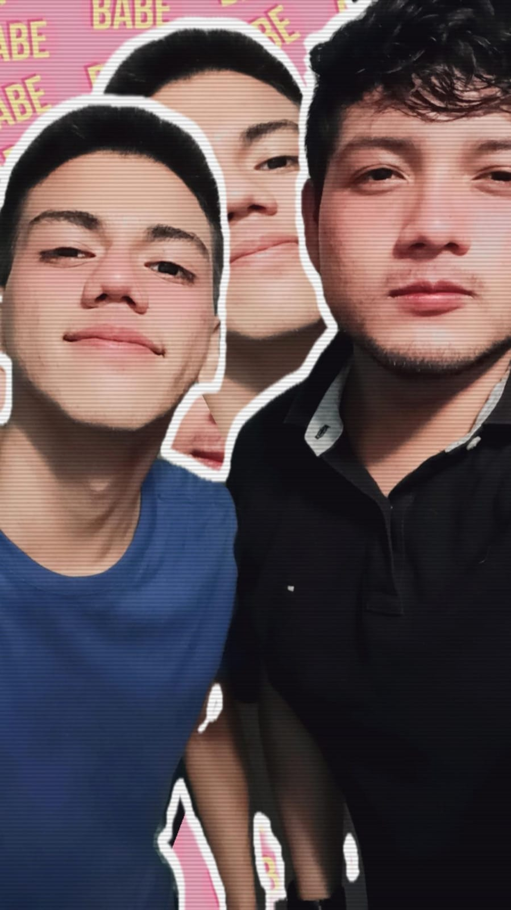

Mi familia
Sandra Loarca
Ella es mi mamá, Su nombre es Sandra Loarca. Estoy muy agradecido de que ella sea mi mamá ya que siempre ha demostrado darlo todo por sus hijos, ella me enseño grandes valores y como sobrevivir en este mundo. Toda mi vida estaré agradecido con ella.

Carolina Loarca
Ella es mi hermana, su nombre es Carolina Loarca. Sin duda es una de las personas más trabajadoras que he conocido, siempre sobresale en su trabajo, aparte siempre sabe arreglarse y es muy graciosa, la quiero mucho.

Ervin Loarca
Él es mi hermano, su nombre es Ervin Loarca Es una de las personas más inteligentes que he conocido, mayormente siempre sobresale en todo y demuestra que es bueno para casi todo, es gracioso, a veces molesta mucho pero así lo quiero, gracias a él supe que puedo ser inteligente.


Adin Guzmán
Él es mi sobrino, su nombre es Adin Guzmán. Es hijo de mi hermana y pues actualmente tiene 8 años, él es un niño muy energético como yo y de hecho entiende de manera rápida cada cosa que se le es enseñada, lo quiero mucho y a veces me gusta jugar Clash Royale con él.